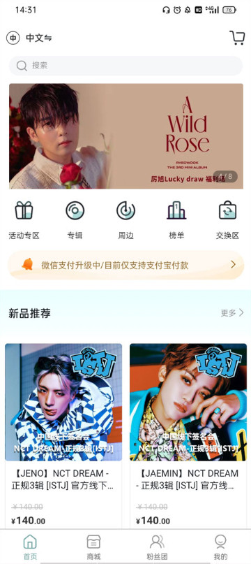
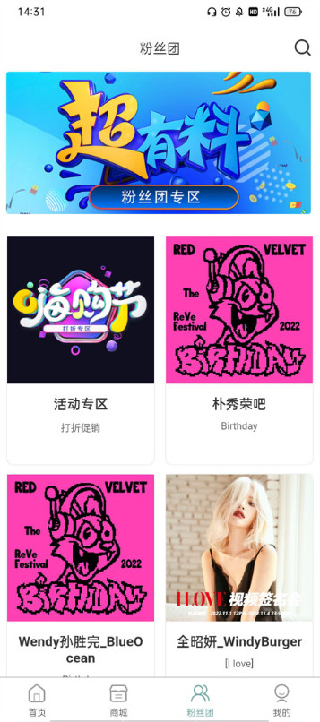

KMS 到底值不值得掏钱？一个追了两年的老用户给你算算账
KMS 不是月费订阅软件，它是追星购物的入口——但特典、团购、签名会这些玩法加起来，一年下来账一点不少。本文从轻度到重度三类用户拆解值不值花在它身上。
它到底值不值得掏钱？这是我第一次打开kms官网时脑子里蹦出来的第一个问题。两年过去了，我在它上面花过的钱够换半张专辑，踩过的坑也能凑成一篇避坑清单。与其让你摸着石头过河，不如我把这笔账摊开给你看。
先搞清楚：KMS 到底让你为什么付费
很多人第一次接触 KMS 会有误解——它不是那种按月收订阅费的追星 App。从下载拿安装包，注册邮箱，逛商城，全免费。真正让你掏腰包的是它承载的一整套韩国直邮追星玩法：专辑直邮、特典（POB + Lucky Draw）、粉丝团团购、签名会招募。这些加在一起才是 KMS 的消费全貌。
简单说，KMS 是个"门票"：入场免费，但场内每一项活动都要单独买票。
定价拆解：免费版给什么，花钱买什么
先说清楚什么是"免费版"——就是你只看不买的状态。KMS 免费给你：
- 浏览全部商品页面，包括预售和现货信息；
- 注册账号、填地址、绑优惠券；
- 看平台公告、活动预告、签名会招募海报；
- 加入粉丝团（光关注不参团不花钱）。
这时候它就是个信息看板，没什么成本。但如果你想参与下面这些，就要真金白银了：
| 花钱的地方 | 花在哪 | 花多少 |
|---|---|---|
| 专辑直邮 | 商品本身 + 国际运费 | 一张裸专 100~200 不等，运费另算 |
| POB 特典 | 平台独家赠品的溢价 | 通常比裸专贵 30%~50% |
| Lucky Draw | 抽随机成员小卡的资格 | 含在特典专价格里，但中不了等于白付溢价 |
| 粉丝团团购 | 拼单拿更低的单价或隐藏特典 | 裸专价 + 团购团长收的微薄服务费 |
| 签名会招募 | 买专辑换抽选资格 | 本质还是买专辑，但名额有限要抢时间 |
这里有个定价上挺鸡贼的点：Lucky Draw 的成本是隐性的。你花了特典专的钱，理论上拿到了抽奖资格，但没中就是没中——平台不会退你"抽奖那部分溢价"。心态上要把它当"买专辑送一次免费抽奖"，而不是"花钱买一个中奖承诺"。
分三类人算账
算账不能一刀切，不同使用强度的人，"值不值"的答案完全不一样。我按实际观察到的三种典型用法，分别算一笔。
轻度用户：一年买一两张专辑，偶尔看个签名会招募
如果你的使用场景是"想起了就下一张、有喜欢的成员中签会就凑个热闹"，那 KMS 对你来说就是个找个靠谱渠道买韩专的工具。
算一笔：一年两张专，按平均 150 一张加运费 50，总共 400。特典看心情，大部分时候买裸专就够了。这时候 KMS 提供的价值是——比代购靠谱、比自己找转运省心、平台直邮有售后。
每笔 200 块花出去，换来的是：不用在各个代购群里蹲、不用担心买到假货、物流全程可查。这个"省心"值不值 200？对轻度用户来说，我觉得值。毕竟你一年只碰两次，花点钱买个不折腾，比自己搭时间研究代购生态划算。

主力用户：每月都有想买的，粉丝团经常上车
主力用户是 KMS 的核心人群——每个月至少一张专，粉丝团团购常客，特典专必买，签名会招募不会错过。
这笔账就不一样了。假设你每月一张，按特典专算：特典专均价 220，运费 50，一年下来就是 (220 + 50) × 12 = 3240 元。团购能省点运费，算它 10%，也还在 3000 左右。
3000 块一年换什么？核心收益是特典独家性 + 参与感。POB 特典是 KMS 独有的，你在别的渠道买不到那张小卡、那套贴纸；粉丝团团购能拿到隐藏特典；签名会招募是你能去线下见偶像的唯一正规渠道。
反过来看成本：等预售的时间（有的预售要等 3~6 个月发货）、研究规则的精力（Lucky Draw 怎么算、一车上限多少、截单时间几点——这些kms文档里都有详细说明）、地址改了要联系客服的麻烦。这些都是隐性成本。
主力用户的"值不值"，取决于你给"独家特典"和"参与签名会"打多少分。如果你觉得"能拿到那张别人没有的小卡"值 100 块，那这笔账算下来大概率是赚的。
重度用户：追着回归、蹲遍签名会、粉丝团一姐
重度用户可能月均两到三张专，每次回归都蹲 POB，签名会报名一个不落下，粉丝团参团率 100%。
一年下来轻松过 6000。这时候再算"值不值"，其实已经不是算账了——这是生活方式消费。就像有人每个月花几千打游戏、有人花几千买球鞋，追星本来就是个人选择。KMS 在重度用户那里扮演的角色不是"工具"，而是"游乐场的门票"——你进去了就会花钱，关键是你玩得开不开心。
但我还是要提醒重度用户一件事：别把 Lucky Draw 当中奖承诺。我见过有人连买三张特典专全没中，心态直接崩了。KMS 的规则写得很清楚——抽选就是抽选，没中专辑照常发，平台不退差价。把 Lucky Draw 当彩蛋而不是主线决策依据，会省很多情绪成本。

不付这笔钱，还有别的路吗
当然有，只是每条路都有代价。
替代方案一：代购
淘宝或闲鱼找代购，他们可能走同样的 KMS 渠道帮你下单，然后从他们那寄给你。好处是你不用自己研究 KMS 的规则、填地址、绑邮箱。坏处是加价普遍 15%~30%，而且售后麻烦——包裹出问题，代购和平台两边推。
算下来，一张 150 的裸专，代购卖你 180~200，再加运费，其实和你自己在 KMS 买差不多。你省了研究时间，但多花了钱，还多了一层中间商风险。
替代方案二：韩国直邮平台替代
市场上还有其他韩国直邮的平台，但说实话，KMS 的特典机制和粉丝团生态是独一份的。你换个平台能买到专辑，但拿不到 POB 小卡；能看到签名会信息，但报名流程可能不一样。如果你的核心诉求是特典和签售，KMS 几乎没有替代。
替代方案三：降低使用频率
这是最鸡贼也最实际的替代——不追每一次回归，只追你真喜欢的成员。一年从 12 张减到 3 张，消费直接砍到四分之一，特典只在你在意的那次买，Lucky Draw 只抽一次。成本下来了，情绪浓度反而上去了。
结论：三秒对号入座
最后给你一个一分钟决策表，对照自己的情况打勾就行。
- 闭眼付：你是主力或重度用户、已经在用 KMS 两年以上、特典和签售是你的刚需——你比我清楚自己要什么，继续付就行。
- 再等等：你是轻度用户但被某个特典勾住了——先确认这个特典是不是"过了就没了"的那种，不是的话等下一次回归再说。
- 永远不用付：你只想要专辑本身、不在乎特典、嫌规则麻烦——找个代购或别的平台，绕开 KMS 这套玩法。
我自己现在属于"主力但自觉降频"的状态——每月一张专，特典只在喜欢的成员回归时买，签名会只报名离得近的场次。一年下来比刚入坑时少花了一半，但该有的体验一个没少。
这套资料我分别同步到了GitHub、Gitee和GitCode三个仓库，不想在 App 里翻规则的话可以直接去仓库看文档目录，三个平台里总有一个你访问顺畅。